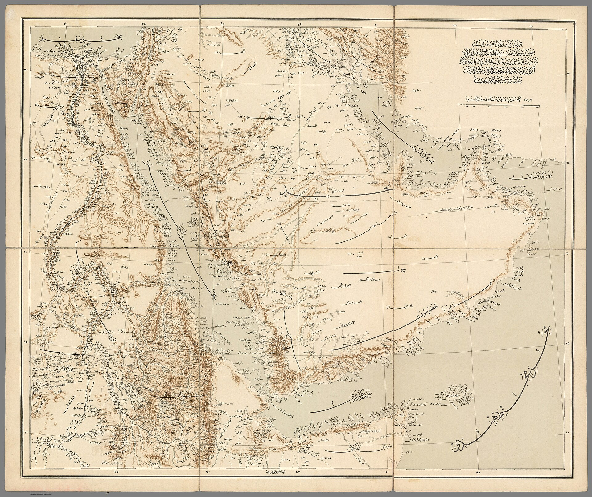

Eron Hormuz bo‘g‘ozini ochish uchun 7 kunlik reja berdi; Tramp rad etdi
Eron TIV rahbari Abbos Araqchi shartlarni e'lon qildi; AQSh prezidenti taklifni rad etib, dengiz blokadasi saqlanishini bildirdi.

Eron tashqi ishlar vaziri Abbos Araqchi Birlashgan Millatlar Tashkiloti Bosh Assambleyasi hoshiyasida Eron Hormuz bo‘g‘ozini ochish va yadro muzokaralarini yetti kun ichida qayta boshlash rejasini taqdim etganini aytdi.
Eronning shartlari
Rejaga ko‘ra, Amerika Qo‘shma Shtatlari Eron portlariga qo‘ygan dengiz blokadasini bekor qilishi, neft savdosiga sanksiyalarni to‘xtatishi, muzlatilgan aktivlarni qaytarishi va barcha frontlarda, jumladan Livanda, o‘q otishni to‘xtatishi kerak. Buning evaziga Eron bo‘g‘ozni ochadi va Vashington bilan yadro dasturi bo‘yicha muzokara boshlaydi.
Nega bu muhim
Hormuz bo‘g‘ozi orqali jahon neftining qariyb beshdan bir qismi tashiladi; bo‘g‘ozning yopiqligi jahon energiya bozoriga bosim o‘tkazadi.
AQSh javobi
Xabarlarga ko‘ra, AQSh prezidenti Donald Tramp yetti kunlik taklifni rad etdi va oraliq saylovlardan keyin harbiy zarbalar qayta boshlanishini kutayotganini aytdi. Vashington dengiz blokadasini bekor qilish niyati yo‘qligini bildirgan.
Kontekst
Taklif 17-iyun kuni imzolangan, ammo bir oydan so‘ng barbod bo‘lgan kelishuvni eslatadi. AQSh–Isroil va Eron o‘rtasidagi urush oylab davom etmoqda.
Qisqacha
- Kim: Eron TIV Abbos Araqchi (BMTda)
- Reja: Hormuzni 7 kunda ochish
- Shart: blokada, neft sanksiyalari, o‘q otishni to‘xtatish
- AQSh: Tramp rad etdi, blokada saqlanadi